(formerly Veronica's Foray into Early Medieval Costume)
This web site came about as an attempt to record what I was making for the Holy Cross Festival - an annual celebration of the Maternal Heart of Mary Church, Lewisham.
Unfortunately there was sickness in the family in 2007 so we couldn't all make it. Chris and Peter stayed home. This was a shame since I'd made a new sleeveless jacket for Chris with fur trim.
New for 2006: Peter wore a dark blue tunic edged with bands of lighter blue. He had two hats to chose from during the day, one of red velvet with a tablet-woven band the other of green felt with a peugeot badge. Veronica wore a new overdress made along the lines of a burgundian houppelande. Her hair was covered by a new hand-made hairnet netted from size 4 white crochet cotton with silk veil and chinstrap from 2003. Patrick wore an oversize tunic that should fit better in the years ahead. His cloak was a half-circle of a synthetic suede-like fabric fastened with a button and loop. Chris had a new hat of felt, velvet and gold cord. Making hats is fun.
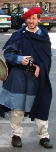 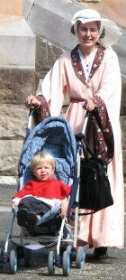 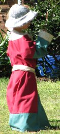 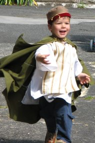 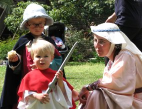 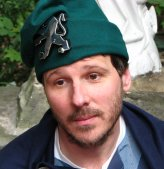My veil stayed put really well this year. My hair was in two braids curled up Princess Leia style (except my hair is not that long). The hair net held on well - the bobby pins seemed superfluous. The circlet made from coathanger wire covered with a blue braid held the veil down well. There were no pins and there was a good breeze. I used Giraude's helpful pdf document available from his Netting Page for making the hairnet.
Here they are at long last, not as detailed as I would have liked. Patrick, Christopher and I all had new linen tunics. Peter's tunic was ripped in the wash last year and needed mending. Patrick wore a green circle cape, Peter wore a big rectangle of blue wool, I wore a hooded circle cape made of an unknown fabric (greeny blue and nubbly). Anthony had a new flat cap (I hadn't intended it to fit him, but it worked out too small for anyone else) and the fancy tunic that was a little too small for Patrick back in 2003. Chris wore the same red hood as last year. Peter's cloak is held together by a badge bearing the inscription 'Library Assistant'.
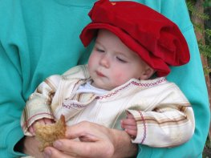 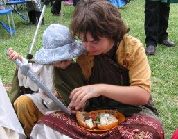 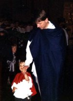Patrick's wearing something like a bathmat. I took it along, who knows why, and it turned out colder than expected so it made a small cape. The blue hat was a bit of an experiment. You can just see the yellow braid on Chris' collar. At the front it has a loop and knot kind of like a frog closure.
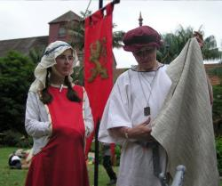 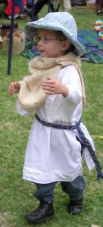 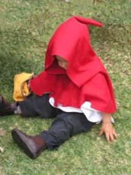 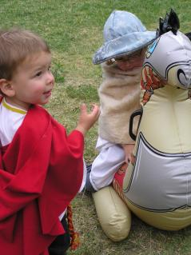The first festival and my first attempts at medieval clothes.
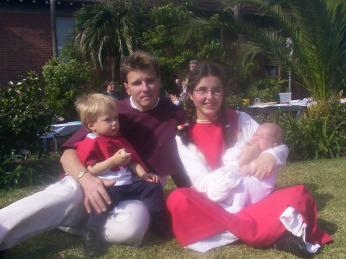